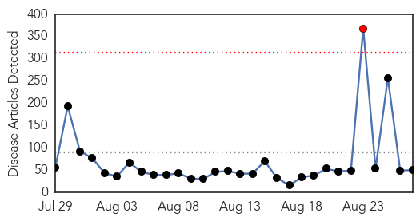
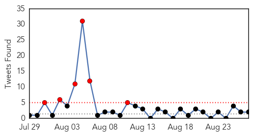
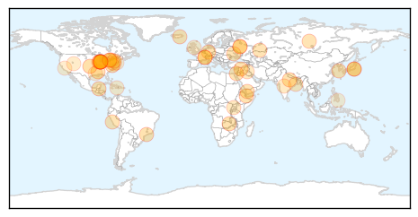
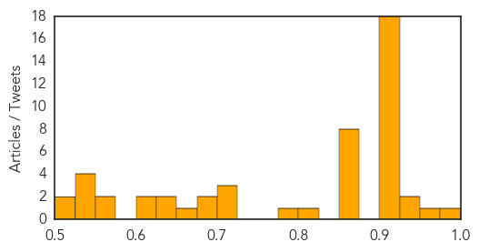

West Nile Virus
30-Day Web Trend
0 alerts, 0 warnings

30-Day Twitter Trend
0 alerts, 0 warnings

Article Locations

Article Confidences

Top Articles:
Top Tweets:
-
No tweets found for Aug 27, 2014
Unknown
30-Day Web Trend
1 alerts, 0 warnings

30-Day Twitter Trend
6 alerts, 0 warnings

Article Locations
Article Confidences
Top Articles:
- 0.993
- Causes, Symptoms & Treatment
- 0.959
- Stomach flu study reveals an $18.6 mil burden
- 0.936
- Docs rush to Koraon villages after death of 5 kids
- 0.935
- The Post
- 0.917
- Chicago Tribune
- 0.917
- Chicago Tribune
- 0.917
- Chicago Tribune
- 0.917
- Chicago Tribune
- 0.917
- Chicago Tribune
- 0.917
- Chicago Tribune
- 0.917
- Chicago Tribune
- 0.917
- Chicago Tribune
- 0.917
- Chicago Tribune
- 0.917
- Chicago Tribune
- 0.917
- Chicago Tribune
- 0.917
- Chicago Tribune
- 0.917
- Chicago Tribune
- 0.917
- Chicago Tribune
- 0.917
- Chicago Tribune
- 0.917
- Chicago Tribune
- 0.917
- Chicago Tribune
- 0.902
- Litchfield Farmer Works to Prevent National PEDV Outbreak in Connecticut's Pigs
- 0.866
- A Hamas militant holds a Palestinian boy as he celebrates with people what they said was a victory over Israel, in Gaza City
- 0.866
- Supporters of the Shi'ite Houthi group march during an anti-government demonstration in Sanaa
- 0.866
- Air France suspends flights to Sierra Leone
- 0.866
- Russia says not interested in confrontation, "sanctions spiral"
- 0.866
- Ukraine expects "practical help" from NATO
- 0.866
- Ukraine's PM says Russia has plans to block gas flows to Europe
- 0.866
- Russia court closes McDonald's branch for 90 days
- 0.866
- A riot police officer adjusts a rose given by public sector doctors during a demonstration against the government in Lima
- 0.805
- Hoboken Pediatrics Joins CarePoint Health Medical Group
- 0.784
- E-coli found in water in Greater Noida village
- 0.725
- Ugandan’s health literacy levels very low
- 0.718
- Four die of mystery disease in West Darfur - Sudan
- 0.718
- Iraq crisis Situation Report, Issue 8
- 0.691
- Toronto Public Health issues warning over wild mushrooms
- 0.684
- Leprosy: Myanmar’s battle with an ancient scourge - Health
- 0.667
- Flu Shots Arrive Early - Story
- 0.648
- Abington Health Opens New Health Center in Lower Gwynedd
- 0.635
- Scotland's red squirrels face leprosy threat
- 0.622
- 45 in Utah have campylobacteriosis from raw milk
- 0.622
- Social work, public health students get firsthand global health experience in Haiti this summer
- 0.573
- Doctors across the county are witnessing the rise in the spread of drug-resistant superbugs. Each year the Centers for Disease Control estimates that drug-resistant bacteria make 2 million people in t
- 0.554
- Raccoon that attacked Connecticut woman tests positive for rabies
- 0.546
- Health code violations shutting 4 S.F. sites a week
- 0.532
- Brain-eating amoeba found in St. John Parish water system, state health agency reports
- 0.527
- Philippines among 8 countries with most HIV cases
- 0.527
- Toronto Public Health issues warning after resident eats poisonous mushroom
- 0.517
- Simodejka stepping down as Schuylkill Health president/CEO
- 0.502
- Health officials issue warning against eating wild mushrooms
Showing top 50 articles...
Top Tweets:
- 0.530
- RT: Have you gotten your flu vaccine this year? Now's the time - find a flu vaccine provider near you: http://t.co/y2kg62mKDe
- 0.530
- RT: Have you gotten your flu vaccine this year? Now's the time - find a flu vaccine provider near you: http://t.co/y2kg62mKDe